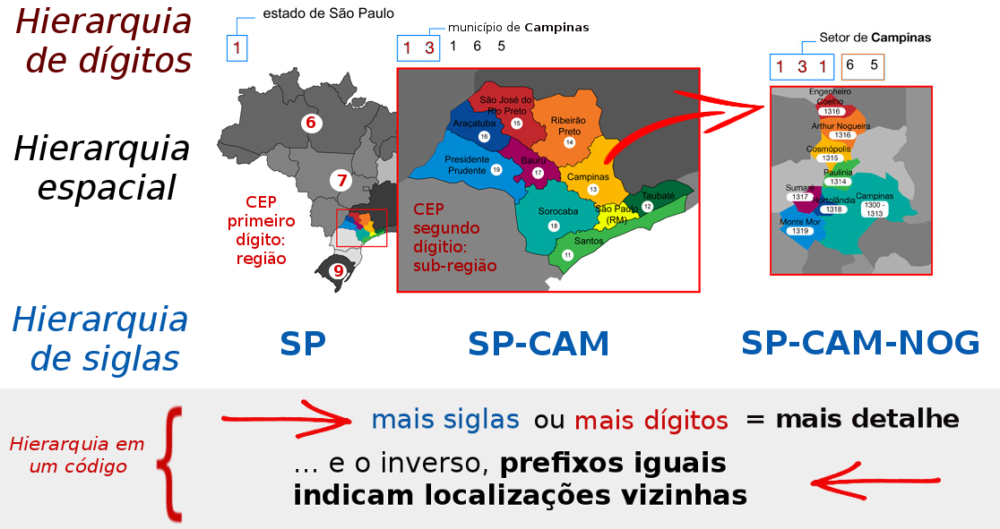

v0.0.2 - rascunho de 1/10/2018
Proposta de Código Localizador de Portão, CLP: recomendações, estudos de viabilidade e lançamento de consulta pública para a proposta de um padrão.
A ideia central do CLP é oferecer de maneira simples e padronizada, através de um código, a localização geográfica de um portão. O código seria usado também como "endereço do local" ao qual o portão dá acesso.
Portão em sentido amplo, de portaria, porteira, porta, acesso ou portal: no meio urbano a menor distância entre portões é da ordem de 3 metros, no meio rural é da ordem de 15 metros. Portões de condomínios, parques, etc. no meio urbano, requerem menos precisão, como no meio rural.

As tecnologias para se implantar e padronizar um CLP são bem consolidadas, existem opções como o Geohash, S2 ou PlusCode, que são padrões livres, e MapCode ou Whats3words, patenteados mas úteis como exemplo. Estas opções podem ser melhor adaptadas às condições e padrões locais do Brasil, e nisto consistirá uma parte relevante dos estudos e recomendações realizados pelo presente projeto.
Outro aspecto, a ser decidido com a comunidade, será quanto à estrutura hierárquica ou não-hierárquica do código CLP, e quanto ao uso ou não de siglas. No Brasil nos acostumamos com o CEP, que é um código hierárquico, conforme ilustrado abaixo.

O CEP com mais dígitos vai representando com mais detalhe uma região do espaço... Mas são 8 dígitos no CEP completo, e ainda assim não representa o endereço exato do portão. Com o CLP podemos fazer melhor, e justamente por isso, entre outras aplicações, o CLP substituiria o CEP, para num só código, de 7 ou 8 caracteres, chegarmos no portão.
Vejamos como seria, por exemplo, o CLP para localizar o "portão" do MASP.

Os códigos de localização existentes, como o Geohash ou o PlusCode, assim como estão já seriam melhores do que o CEP. Mas eles também podem ser melhorados, adaptados para o Brasil, fazer uso do que os brasieiros já usam no dia-a-dia. Deveria ser natural, por exemplo:
-
o uso de abreviações consagradas como os códigos de estado:
BR-SPou simplesmenteSPdesigna o Estado de São Paulo,AMAmazonas, etc. -
a abreviação de 3 letras do município: Sampa é
SPA, a vizinha GuarulhosGRHe PiracicabaPIR... Jaraguá do Sul em SC éJGS. -
das regras de hierarquia: primeiro sigla estadual depois municipal. A sigla PIR só tem significado dentro da sua hierarquia,
BR-SP-PIRsignifica Piracicaba, que é diferente deBR-GO-PIR, de Pires do Rio; -
do contexto. Numa carta internacional acrescentamos prefixo
BRficandoBR-SP-SPA, mas se a carta circula apenas dentro de SP basta a sigla do município, comoPIRouSPA.
Isso tudo resultaria em um código CLP mais adequado para o brasileiro usar. As siglas, não se vê todos os dias, mas já vinhamos usando: em diversos códigos oficiais, tais como identificadores LEX de normas jurídicas, e nas placas de vias públicas ou mapas oficiais. As siglas estão no código das estradas federais (ex. BR-116), estaduais (ex. SP-147) e municipais (ex. PIR-033).
Voltemos ao CLP do MASP, como é hoje e como seriam pequenas adaptações:
| Opção de CLP proposta (contexto BR) |
portão do MASP na tecnologia de referência |
|---|---|
SP |
Código ISO 3166 do estado (BR-SP) |
SP:Y |
Geohash da região (6gy) ~140x140 km |
SP-SPA |
Código Oficial do município (BR-SP-SPA) |
SP:YCF |
Geohash da sub-região (6gycf) ~4x5 km |
| (supondo contexto SP) | |
SPA-YCFQ.F0 |
Geohash do portão (6gycfqf0) ~25x20 m |
SPA-YCFQ.F0M |
Geohash de um ponto (6gycfqf0m) ~4x4 m |
SPA-C8QV+CJ |
PlusCode do portão (588MC8QV+CJ) ~15x15 m |
SPA-C8QV+CJ4 |
PlusCode de um ponto (588MC8QV+CJ4) ~3x3 m |
SPA-2PP5.5C * |
S2 do portão (94ce59c94ac) ~15x15 m |
SPA-1CSI.IN1 * |
S2 de um ponto (94ce59c94ae1) ~2x2 m |
| * convertido p. base32. |
No debate devemos chamar atenção para o fato de que o PlusCode não satisfaz o requisito da hierarquia nas macroregiões: é fundamental saber, antes de decidir qual tecnologia usar, quais critérios consensuais adotaremos.
Entre os padrões que satisfazem todos os requisitos, como o Geohash e o S2, outras otimizações podem ainda ser realizadas, levando a códigos mais curtos ou mnemônicos. Ao fixarmos em normas brasileiras uma tabela de subregiões do município, por exemplo, podemos reduzir em um dígito ambos os casos S2 e Geohash. Se além disso, fazermos uso de estimativas da "mancha urbana futura" como fizeram o CEP e o MapCode, o resultado fica ainda melhor, mas a custo de códigos mais longos no meio rural... Tudo isso seria detalhado pelo presente projeto, para que tenhamos subsídios para uma decisão racional.
O levantamento sistemático, com seleção de otimizações viáveis e a comparação dos resultados otimizados é também tema central da presente proposta, um resultado importante de ser apresentado.
Dois padrões, via e coordenada
Afinal CLP, Código Localizador de Portão, faz também papel de "endereço da casa dona do portão". Falta então definir um outro padrão que é um código que seja uma versão compacta do endereço postal tradicional. Por exemplo o endereço do MASP, "Avenida Paulista 1578, São Paulo". Suponhamos que o código oficial da avenida fosse U131, então o CLP resultaria em algo como SPA-U131-1578.
Alternativamente, em um contexto onde não se disponha do código do logradouro, o padrão também deve prever a expressão por extenso, que no exemplo resultaria em SPA-av_paulista-1578.
Esse tipo de código é importante para a representação interna dos endereços de correspondência em bancos de dados abertos, links da internet, e na comunicação entre bancos de dados (interoperabilidade).
Existem portanto dois grupos principais de CLPs:
| Definição do tipo | Aplicações e exemplos |
|---|---|
| CLP-via: Soluções baseadas na proximidade do portão com uma via de acesso a ele. O CLP-via seria uma escrita simplificada e padronizada do endereço postal; o tradicional, baseado em logradouro e numeração predial. | Garantiria links corretos e maior interoperabilidade entre bases de endereços. |
| CLP-coordenada: Soluções baseadas na coordenada geográfica do portão. Um algoritmo seguro, do tipo Geohash ou outro, toma como entrada as coordenadas padrão Geo URI, e devolve um código compacto, que é adotado como CLP. |
Seria um código dado por tecnologias como as exemplificadas, Geohash, S2, PlusCode, etc. Além do CLP-coordenada ser proposto como substituto do CEP, seria também proposto como uma opção de expressão de geocódigo ou de coordenadas em protocolos similares ao Geo URI. |
Tecnicamente um tipo pode ser convertido no outro através de procedimentos de geocodificação. Como existe um crescente mercado de geocofificação, a padronização dos dois tipos de CLP também ajudaria a regulamentar o setor, garantindo a separação entre pré-processamento do CLP-via e a geocodificação, que resulta num Geo URI com certo grau de confiabilidade. Quando ambos são fornecidos, ambos podem ser convertidos em coordenadas geográficas e comparados, aferindo-se também um grau de confiabilidade resultante da comparação dos dois. Critérios mínimos para a avaliação de custo e confiabilidade na geocodificação de endereços brasileiros, portanto, passariam a ser viáveis.
A rigor ambos os códigos, CLP-via e CLP-coordenada, são expressões simbólicas cabíveis dentro das regras de construção de nomes fixadas pelo padrão RFC-8141, referente à expressão de URNs (do inglês Uniform Resource Names). A expressão formal do CLP-coordenada do MASP seria algo como urn:geocode:br-sp-spa:2pp55c, e do seu CLP-via algo como urn:geocode:br-sp-spa:via:av_paulista-1578, mas isso apareceria apenas no código-fonte de links ou bancos de dados.
Na prática os códigos impressos, para leitura humana, sinalização, correspondẽncia, etc. aparecem em contextos onde a syntaxe completa de urn é dispensável, ficando apenas a estrutura essencial:


Em ambos os casos o significado de "resolver o código" é transformar o código em uma coordenada geográfica, um ponto ou "célula" no mapa representando a localização do portão. Os algorítmos (softwares) de transformação precisam ser abertos, assim como os dados, disponíveis por exemplo no datasets.ok.org.br e no OpenStreetMap.org.
Planejamento
O trabalho foi apenas esboçado, um banco de dados está sendo preparado, alguns testes foram feitos, parte da comunidade já está dialogando... Todavia há muito que ser realizado, completando tarefas, coordenando voluntários, ampliando o debate e sistematizando decisões. Não é muito diferente do ciclo de construção de normas técnicas. A seguir o planejamento detalhado, incluindo metas e prazos.
Objetivo e metas do trabalho
Resumo:
Construir, debater e revisar com a comunidade os requisitos do CLP, que subsidiarão os testes, seleção e debate das principais alternativas tecnológicas — por exemplo Geohash, PlusCode e S2geometry —, elegendo-se entre elas o fundamento do CLP .
Construir, debater e revisar com a comunidade a especificação técnica do CLP v1.0, bem como disponibilizar protótipos para a realização de testes abertos durante a consulta pública.
Alinhar a proposta através do diálogo com autoridades técnicas (ex. ABNT, IBGE e universidades) e governamentais (ex. SINTER e secretarias de estado), oferecendo após consulta pública, uma proposta CLP v1.1 mais consistente e consensual.
As discussões e decisões coletivas seguirão a "metodologia das rodadas de discussão estruturada", ou similar. Incialmente em um grupo mais especializado depois crescendo para um coletivo mais amplo na análise das soluções:
-
Comunidades OpenStreetMap e Wikidata. Esse núcleo inicial tem ajudado a delimitar o escopo nos requisitos e a listar todas as potenciais soluções.
-
Representantes das demais comunidades do terceiro setor e universidades. Por exemplo ONGs de inclusão social e construção de habitações já vem apoiando a formalação dos requisitos. ONGs orientadas a software e dados abertos ajudam a testar soluções. Todas, através dos testes e do diálogo tomam parte nas rodadas de busca de consenso para as melhores práticas e soluções.
-
Empresas. Ajudam a avaliar a viablidade do "ecossistema de soluções" que poderiam surgir em torno do padrão, e em todas as instâncias do debate técnico.
-
Prefeituras menores. É prevista a realização de testes concretos em municípios menores, com o apoio de prefereituras que já vinham aderindo a soluções abertas e uso do OpenStreetMap.
-
Autoridades governamentais. Já vem ocorrendo o diálogo por exemplo com o SINTER (Sistema nacional de gestão de informações territoriais), ligado à Receita Federal, e Secretarias do Estado em SP. Apesar de ser importante o diálogo ao longo de todo processo, a formalização se dará apenas no final, com a proposta v1.0 consolidada. Outros importantes atores no setor são o IBGE, a ABNT e as diversas Secretarias de Estado, na Agricultura, na Habitação, no Turismo, e no Meio Ambeinte.
Não estamos sozinhos
A busca por soluções eficientes e abertas é mundial, floresceu nos anos recentes. Veja esta lista com uma centena de outros países, analisados quanto à abertura da sua base de códigos postais (análogos do CEP a cada país), apenas ~5% são considerados razoavelmente abertos: OpenDataIndex/Postcodes, 90% dos países ainda apresentam problemas sérios de licença privada e exploração comercial sobre dado público, como no Brasil.
Na Europa, Japão e outros países já se estuda um "upgrade" dos respectivos CEPs. Na Irlanda por exemplo diversas alternativas foram estudadas entre 2010 e 2011 e hoje já se encontra implantado um sistema mais moderno, baseado em coordenadas geográficas.
Quanto à população mais sensível ao problema de "não ter um endereço para chamar de seu", no Brasil, quem mais sofre é a população do meio rural, e os bairros e regiões em situação de habitação precária — segundo dados da TETO Brasil são ~15 milhões habitantes desatendidos pelo CEP ou nome de rua. Todos beneficiariam enormemente de um código de localização oficial, um CLO para o local onde habitam.
Conteúdos e dados deste projeto são dedicados ao domínio público. Ver também Créditos das imagens.